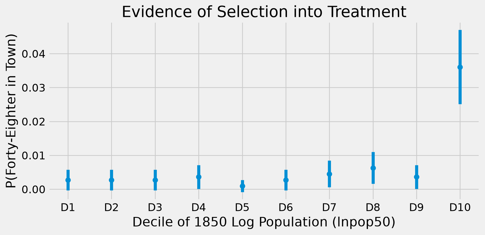
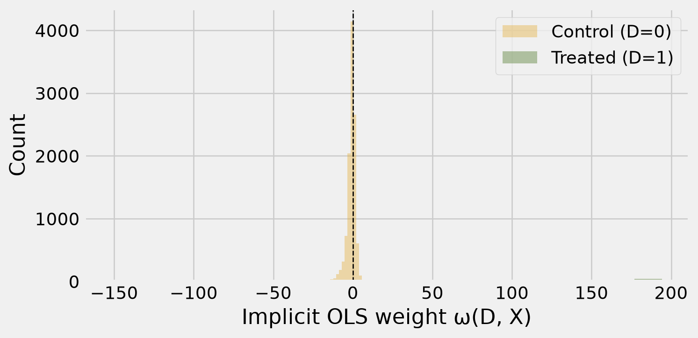
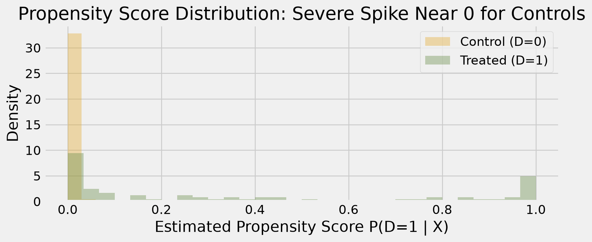

ECON526 — Real-Data Application (Dippel & Heblich, 2021)
University of British Columbia
fourty8ersD_1856 — whether town \(i\) had at least one Forty-Eighter by 1856.logenlistments — log Union Army enlistments from town \(i\) during the U.S. Civil War.doubleml approaches:
DoubleMLIRM) for doubly robust ATTE estimation.DoubleMLPLR) when treatment is rare (\(0.66\%\) treated) and inverse propensity weights become unstable.# Replicate the town-level dataset construction from REPLICATION/code/build_main.do
df = pd.read_stata(os.path.join(din, "master_haines.dta"))
# Town size bins (bottom 5%, middle 90%, top 5%) used for exact matching in the paper
p95, p05 = df["lnpop50"].quantile([0.95, 0.05])
df["fe_lnpop_pct"] = 1
df.loc[df["lnpop50"] >= p95, "fe_lnpop_pct"] = 2
df.loc[df["lnpop50"] <= p05, "fe_lnpop_pct"] = 3
# Merge town-level datasets on (name, county_icpsr, state_icpsr)
town_files = [
"FourtyEighters_town.dta", "FourtyEighters_from1856.dta", "enlistments_town.dta",
"enlistmentsInterpolated.dta", "turnvereine_towns.dta", "newspapersGerman_town.dta",
"germans_bytownFullCount.dta", "ShiplistsGermans.dta", "others_bytownFullCount.dta",
"geo_controls.dta", "1840_towns.dta",
]
for fname in town_files:
sub = pd.read_stata(os.path.join(din, fname))
df = df.merge(sub, on=["name", "county_icpsr", "state_icpsr"], how="outer")
# Merge county-level controls on (state_icpsr, county_icpsr)
for fname in ["ipums_countycontrols.dta", "votingdata_co_xs.dta"]:
sub = pd.read_stata(os.path.join(din, fname))
df = df.merge(sub, on=["state_icpsr", "county_icpsr"], how="left")# Construct outcome and German-born share variables as in build_main.do
df["enlistments"] = df["count_1"]
df["logenlistments"] = np.log(df["enlistments"].where(df["enlistments"] > 0))
df["gborn1850_share"] = (df["count_gborn1850"] / df["pop50"]).fillna(0)
df["gborn1860_share"] = (df["count_gborn1860"] / df["pop60"]).fillna(0)
df["ch_gborn_share"] = (df["gborn1860_share"] - df["gborn1850_share"]).fillna(0)
# Drop Western/Southern states (no Union enlistment data) and NYC (>100 Forty-Eighters)
df = df[~df["region"].isin(["west", "deepsouth", "oldsouth"])].copy()
df = df[~(df["fourty8ers"] > 100)].copy()
# Exact control groups from REPLICATION/code/Master_do.do
D_col = "fourty8ersD_1856"
Y_col = "logenlistments"
ctrls_core = ["gborn1850_share", "ln_dist_metzler", "ch_gborn_share", "GtA_", "germansnewsp_1850", "lnpop50"]
ctrls_geo = ["ln_weighted_dist_port", "ln_dist_navriver", "ln_dist_rail", "ln_dist_Coast",
"lat", "lng", "ln_elevation", "mean_temperature", "mean_precipitation"]
ctrls_fish = ["sltot50_share", "fctot50_share", "whfemale50_share"]
ctrls_1840 = ["pop_ch4050", "sltot_ch4050", "fctot_ch4050", "whfemale_ch4050"]
all_ctrls = ctrls_core + ctrls_geo + ctrls_fish + ctrls_1840
needed = [Y_col, D_col, "state_icpsr", "fe_lnpop_pct"] + all_ctrls
df_clean = df.dropna(subset=needed).copy()
df_enc = pd.get_dummies(df_clean[[Y_col, D_col, "state_icpsr", "fe_lnpop_pct"] + all_ctrls],
columns=["state_icpsr"], drop_first=True, dtype=float)
X_cols = [c for c in df_enc.columns if c not in [Y_col, D_col, "fe_lnpop_pct"]]
print(f"Final sample: {len(df_clean)} towns | Treated: {int(df_clean[D_col].sum())} | Control: {int((1 - df_clean[D_col]).sum())}")
print(f"Total covariates (including state dummies): {len(X_cols)}")Final sample: 11096 towns | Treated: 73 | Control: 11023
Total covariates (including state dummies): 45def std_error(x):
return np.std(x, ddof=1) / np.sqrt(len(x))
df_clean["pop_bin"] = pd.qcut(df_clean["lnpop50"], q=10, duplicates="drop")
grouped = df_clean.groupby("pop_bin", observed=True)[D_col].agg(["mean", std_error]).reset_index()
fig, ax = plt.subplots(figsize=(9, 4.5))
ax.errorbar(range(len(grouped)), grouped["mean"], yerr=1.96 * grouped["std_error"], fmt="o")
ax.set_xticks(range(len(grouped)))
ax.set_xticklabels([f"D{i+1}" for i in range(len(grouped))])
ax.set_xlabel("Decile of 1850 Log Population (lnpop50)")
ax.set_ylabel("P(Forty-Eighter in Town)")
ax.set_title("Evidence of Selection into Treatment")
plt.tight_layout()
plt.show()
# 1. Unadjusted difference in means (clustered by state_icpsr as in run_main.do)
unadj = smf.ols(f"{Y_col} ~ {D_col}", data=df_clean).fit(
cov_type="cluster", cov_kwds={"groups": df_clean["state_icpsr"]}
)
print("Unadjusted difference in means:")
print(unadj.summary().tables[1])
# 2. Full-sample OLS with all controls + state fixed effects
ols_full = smf.ols(
f"{Y_col} ~ {D_col} + " + " + ".join(all_ctrls) + " + C(state_icpsr)",
data=df_clean,
).fit(cov_type="cluster", cov_kwds={"groups": df_clean["state_icpsr"]})
print("\nFull-sample OLS (all controls + state FE):")
print(ols_full.summary().tables[1].data[:3])Unadjusted difference in means:
====================================================================================
coef std err z P>|z| [0.025 0.975]
------------------------------------------------------------------------------------
Intercept 3.8813 0.144 27.016 0.000 3.600 4.163
fourty8ersD_1856 2.5903 0.215 12.063 0.000 2.169 3.011
====================================================================================
Full-sample OLS (all controls + state FE):
[['', 'coef', 'std err', 'z', 'P>|z|', '[0.025', '0.975]'], ['Intercept', ' -7.4451', ' 2.414', ' -3.084', ' 0.002', ' -12.177', ' -2.713'], ['C(state_icpsr)[T.2]', ' -0.0974', ' 0.146', ' -0.666', ' 0.505', ' -0.384', ' 0.189']]lpm = smf.ols(f"{D_col} ~ " + " + ".join(all_ctrls) + " + C(state_icpsr)", data=df_clean).fit()
w_ols = lpm.resid / np.var(lpm.resid)
print(f"Share of treated towns with negative OLS weights: {np.mean(w_ols[df_clean[D_col] == 1] < 0):.3f}")
print(f"Share of control towns with positive OLS weights: {np.mean(w_ols[df_clean[D_col] == 0] > 0):.3f}")
fig, ax = plt.subplots(figsize=(8, 4))
ax.hist(w_ols[df_clean[D_col] == 0], bins=40, alpha=0.4, color="C2", label="Control (D=0)")
ax.hist(w_ols[df_clean[D_col] == 1], bins=20, alpha=0.5, color="C3", label="Treated (D=1)")
ax.axvline(0, color="black", linestyle="--", linewidth=1)
ax.set_xlabel("Implicit OLS weight ω(D, X)")
ax.set_ylabel("Count")
ax.legend()
plt.tight_layout()
plt.show()Share of treated towns with negative OLS weights: 0.041
Share of control towns with positive OLS weights: 0.374
from sklearn.linear_model import LogisticRegression
from sklearn.preprocessing import StandardScaler
from sklearn.pipeline import make_pipeline
X_mat = df_enc[X_cols].values
D_vec = df_enc[D_col].values
Y_vec = df_enc[Y_col].values
# Logit propensity score (matching the logit first stage in kmatch ps)
ps_model = make_pipeline(StandardScaler(), LogisticRegression(max_iter=2000, C=10.0))
ps_model.fit(X_mat, D_vec)
ps = ps_model.predict_proba(X_mat)[:, 1]
print("Control ps quantiles [0, 0.5, 0.9, 0.99, 1.0]:",
np.round(np.quantile(ps[D_vec == 0], [0, 0.5, 0.9, 0.99, 1.0]), 4))
print("Treated ps quantiles [0, 0.1, 0.5, 0.9, 1.0]:",
np.round(np.quantile(ps[D_vec == 1], [0, 0.1, 0.5, 0.9, 1.0]), 4))Control ps quantiles [0, 0.5, 0.9, 0.99, 1.0]: [0. 0.0009 0.0065 0.0601 0.8939]
Treated ps quantiles [0, 0.1, 0.5, 0.9, 1.0]: [2.000e-04 3.000e-03 1.678e-01 1.000e+00 1.000e+00]fig, ax = plt.subplots(figsize=(9, 4))
ax.hist(ps[D_vec == 0], bins=30, density=True, alpha=0.4, color="C2", label="Control (D=0)")
ax.hist(ps[D_vec == 1], bins=30, density=True, alpha=0.4, color="C3", label="Treated (D=1)")
ax.set_xlabel("Estimated Propensity Score P(D=1 | X)")
ax.set_ylabel("Density")
ax.set_title("Propensity Score Distribution: Severe Spike Near 0 for Controls")
ax.legend()
plt.tight_layout()
plt.show()
state \(\times\) pop_bin)from sklearn.neighbors import NearestNeighbors
# 1. Overall 5-NN propensity score matching with replacement (PSM2 style in build_main_PSM.do)
t_idx = np.where(D_vec == 1)[0]
c_idx = np.where(D_vec == 0)[0]
nn = NearestNeighbors(n_neighbors=5).fit(ps[c_idx].reshape(-1, 1))
_, idx = nn.kneighbors(ps[t_idx].reshape(-1, 1))
att_5nn_overall = np.mean(Y_vec[t_idx] - Y_vec[c_idx[idx]].mean(axis=1))
# 2. Exact-matched on (state_icpsr, fe_lnpop_pct) + 5-NN in propensity score (PSM1 style)
strata = list(zip(df_clean["state_icpsr"], df_clean["fe_lnpop_pct"]))
diffs = []
matched_ctrl_weights = np.zeros(len(df_clean))
for ti in t_idx:
cand = [ci for ci in c_idx if strata[ci] == strata[ti]]
if len(cand) >= 5:
nn_s = NearestNeighbors(n_neighbors=5).fit(ps[cand].reshape(-1, 1))
_, ind_s = nn_s.kneighbors([[ps[ti]]])
m_c = [cand[k] for k in ind_s[0]]
elif len(cand) > 0:
m_c = cand
else:
continue
diffs.append(Y_vec[ti] - np.mean(Y_vec[m_c]))
for ci in m_c:
matched_ctrl_weights[ci] += 1.0 / len(m_c)
att_5nn_exact = np.mean(diffs)
print(f"5-NN PSM (overall, ATT): {att_5nn_overall:.4f}")
print(f"5-NN PSM (exact state x pop-bin, ATT): {att_5nn_exact:.4f} (matched treated: {len(diffs)}/{len(t_idx)})")5-NN PSM (overall, ATT): 0.6849
5-NN PSM (exact state x pop-bin, ATT): 1.3305 (matched treated: 71/73)def standardized_mean_diff(X_df, D, weights_ctrl=None):
t_mask, c_mask = D == 1, D == 0
m_t, v_t = X_df[t_mask].mean(), X_df[t_mask].var()
if weights_ctrl is None:
m_c, v_c = X_df[c_mask].mean(), X_df[c_mask].var()
else:
w = weights_ctrl / weights_ctrl.sum()
m_c = (X_df[c_mask].T * w).T.sum()
v_c = ((X_df[c_mask] - m_c) ** 2).T.dot(w)
pooled_sd = np.sqrt(0.5 * (v_t + v_c)).replace(0, np.nan)
return (m_t - m_c) / pooled_sd
key_covs = ["lnpop50", "gborn1850_share", "ch_gborn_share", "germansnewsp_1850", "ln_dist_rail", "lat", "lng"]
smd_before = standardized_mean_diff(df_clean[key_covs], D_vec)
smd_after = standardized_mean_diff(df_clean[key_covs], D_vec, weights_ctrl=matched_ctrl_weights[D_vec == 0])
print(pd.DataFrame({"Before Matching": smd_before, "After 5-NN (PSM1)": smd_after}).round(3)) Before Matching After 5-NN (PSM1)
lnpop50 1.093 0.408
gborn1850_share 0.838 0.106
ch_gborn_share 0.027 -0.091
germansnewsp_1850 0.547 0.417
ln_dist_rail -0.233 -0.119
lat -0.265 -0.089
lng -0.329 0.021# Matched-sample OLS (Table 2, Col 6 of Dippel & Heblich, 2021)
in_psm = (D_vec == 1) | (matched_ctrl_weights > 0)
df_psm = df_clean.iloc[in_psm].copy()
ols_psm = smf.ols(
f"{Y_col} ~ {D_col} + " + " + ".join(all_ctrls) + " + C(state_icpsr)",
data=df_psm,
).fit(cov_type="cluster", cov_kwds={"groups": df_psm["state_icpsr"]})
print(f"\nMatched sample size: {len(df_psm)} (Treated: {int(df_psm[D_col].sum())}, Matched controls: {int((1 - df_psm[D_col]).sum())})")
print(f"OLS on matched sample (all controls + state FE): {ols_psm.params[D_col]:.4f} (SE: {ols_psm.bse[D_col]:.4f})")
Matched sample size: 325 (Treated: 73, Matched controls: 252)
OLS on matched sample (all controls + state FE): 0.6616 (SE: 0.1070)doubleml)DoubleMLIRM Struggles with Rare Treatmentimport doubleml as dml
from sklearn.linear_model import LogisticRegressionCV, LassoCV
from sklearn.ensemble import GradientBoostingRegressor, GradientBoostingClassifier
df_dml = df_enc.copy()
df_dml["state_cluster"] = df_clean["state_icpsr"].values
dmldata = dml.DoubleMLClusterData(
df_dml, y_col=Y_col, d_cols=D_col, x_cols=X_cols, cluster_cols="state_cluster"
)
# DoubleMLIRM (ATTE) with Lasso + Logit
for trim in [0.01, 0.05]:
dml_irm = dml.DoubleMLIRM(
dmldata,
ml_g=make_pipeline(StandardScaler(), LassoCV(cv=5, max_iter=5000, random_state=526)),
ml_m=make_pipeline(StandardScaler(), LogisticRegressionCV(cv=5, scoring="neg_log_loss", max_iter=2000, random_state=526)),
score="ATTE",
n_folds=5,
trimming_threshold=trim,
normalize_ipw=True,
)
dml_irm.fit()
print(f"DoubleMLIRM (Lasso+Logit, trim={trim}): {dml_irm.coef[0]:.4f} (SE: {dml_irm.se[0]:.4f})")DoubleMLIRM (Lasso+Logit, trim=0.01): 4.1805 (SE: 7.4629)DoubleMLIRM (Lasso+Logit, trim=0.05): -0.3711 (SE: 1.1628)DoubleMLPLR (Partially Linear Regression)# 1. DoubleMLPLR with Lasso nuisance learners
dml_plr_lasso = dml.DoubleMLPLR(
dmldata,
ml_l=make_pipeline(StandardScaler(), LassoCV(cv=5, max_iter=5000, random_state=526)),
ml_m=make_pipeline(StandardScaler(), LassoCV(cv=5, max_iter=5000, random_state=526)),
n_folds=5,
)
dml_plr_lasso.fit()
print("DoubleMLPLR (Lasso):")
print(dml_plr_lasso.summary)
# 2. DoubleMLPLR with Gradient Boosting nuisance learners
dml_plr_gb = dml.DoubleMLPLR(
dmldata,
ml_l=GradientBoostingRegressor(n_estimators=100, max_depth=3, learning_rate=0.05, random_state=526),
ml_m=GradientBoostingRegressor(n_estimators=100, max_depth=3, learning_rate=0.05, random_state=526),
n_folds=5,
)
dml_plr_gb.fit()
print("\nDoubleMLPLR (Gradient Boosting):")
print(dml_plr_gb.summary)DoubleMLPLR (Lasso):
coef std err t P>|t| 2.5 % 97.5 %
fourty8ersD_1856 0.866454 0.15253 5.680533 1.342756e-08 0.5675 1.165407
DoubleMLPLR (Gradient Boosting):
coef std err t P>|t| 2.5 % 97.5 %
fourty8ersD_1856 0.645879 0.221337 2.918085 0.003522 0.212067 1.079691results = pd.DataFrame({
"Estimator": [
"Unadjusted Difference",
"Full-Sample OLS (controls + state FE)",
"5-NN Propensity Matching (overall, ATT)",
"5-NN Propensity Matching (exact state x pop, ATT)",
"OLS on Matched Sample (PSM1, N=325)",
"DoubleMLIRM (Lasso+Logit, trim=0.05, ATTE)",
"DoubleMLPLR (Lasso)",
"DoubleMLPLR (Gradient Boosting)",
],
"Estimate": [
unadj.params[D_col],
ols_full.params[D_col],
att_5nn_overall,
att_5nn_exact,
ols_psm.params[D_col],
dml_irm.coef[0],
dml_plr_lasso.coef[0],
dml_plr_gb.coef[0],
],
"SE (clustered)": [
unadj.bse[D_col],
ols_full.bse[D_col],
np.nan,
np.nan,
ols_psm.bse[D_col],
dml_irm.se[0],
dml_plr_lasso.se[0],
dml_plr_gb.se[0],
],
})
print(results.round(4).to_string(index=False)) Estimator Estimate SE (clustered)
Unadjusted Difference 2.5903 0.2147
Full-Sample OLS (controls + state FE) 0.8943 0.1318
5-NN Propensity Matching (overall, ATT) 0.6849 NaN
5-NN Propensity Matching (exact state x pop, ATT) 1.3305 NaN
OLS on Matched Sample (PSM1, N=325) 0.6616 0.1070
DoubleMLIRM (Lasso+Logit, trim=0.05, ATTE) -0.3711 1.1628
DoubleMLPLR (Lasso) 0.8665 0.1525
DoubleMLPLR (Gradient Boosting) 0.6459 0.2213